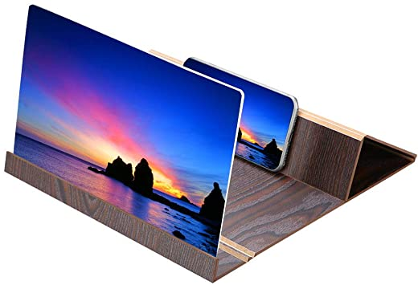
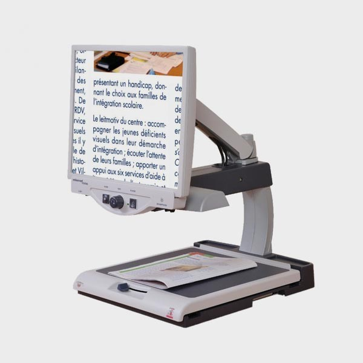

Les agrandisseurs d'écran
Les agrandisseurs d’écran permettent la présentation du contenu de l’écran sous différentes formes. Ils peuvent agrandir les caractères grâce à une loupe Windows, modifier les couleurs d’affichage (inversion de la polarité des couleurs ou affichage en noir et blanc). Il existe aujourd’hui de nombreux logiciels d’agrandisseur d’écran comme Zoomtext qui est un logiciel payant existant sous 2 versions. La première version correspond au grossissement des caractères et la seconde au grossissement et au lecteur d’écran IZoom qui est un logiciel gratuit possédant 6 types d’agrandissement jusqu’à 16 fois, il s’agit néanmoins d’un logiciel exclusivement anglais Les agrandisseurs d’écran peuvent être utilisés à diverses fins comme améliorer le confort de lecture (lire ses mails, accéder aux informations des sites web…)
Les téléagrandisseurs
Les téléagrandisseurs permettent l'agrandissement d'un livre. Il fontionne comme une loupe.
